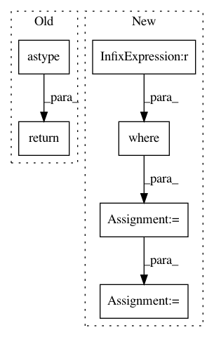

d3443536f3d4e39d5e0b8f90e1f9d0e25af77713,pymc/step_methods/metropolis.py,BinaryMetropolis,astep,#BinaryMetropolis#Any#Any#,159
Before Change
// Stochastically set value according to relative
// probabilities of True and False
return (random(len(q0)) < p_true / (p_true + p_false)).astype(int)
After Change
rand_array = random(q0.shape)
q = copy(q0)
// Locations where switches occur, according to p_jump
switch_locs = where(rand_array<p_jump)
q[switch_locs] = True - q[switch_locs]
q_new = metrop_select(logp(q) - logp(q0), q, q0)
return q_new
In pattern: SUPERPATTERN
Frequency: 3
Non-data size: 6
Instances
Project Name: pymc-devs/pymc3
Commit Name: d3443536f3d4e39d5e0b8f90e1f9d0e25af77713
Time: 2013-05-06
Author: chris.fonnesbeck@vanderbilt.edu
File Name: pymc/step_methods/metropolis.py
Class Name: BinaryMetropolis
Method Name: astep
Project Name: pymc-devs/pymc3
Commit Name: 120e438fcd6357fc81a979d92b39b2bd7101dd34
Time: 2013-05-05
Author: chris.fonnesbeck@vanderbilt.edu
File Name: pymc/step_methods/metropolis.py
Class Name: BinaryMetropolis
Method Name: astep
Project Name: J535D165/recordlinkage
Commit Name: 702899ea0aeb57b5761b85c43d1416ca81d4da00
Time: 2019-03-14
Author: jonathandebruinos@gmail.com
File Name: recordlinkage/compare.py
Class Name: String
Method Name: _compute_vectorized